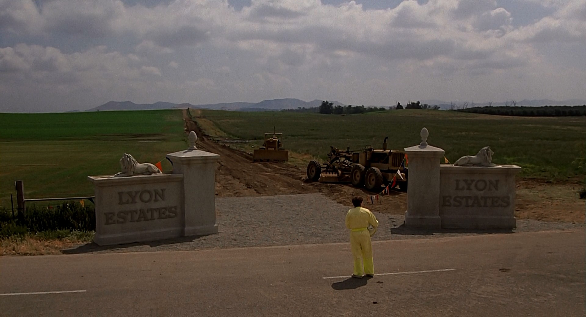
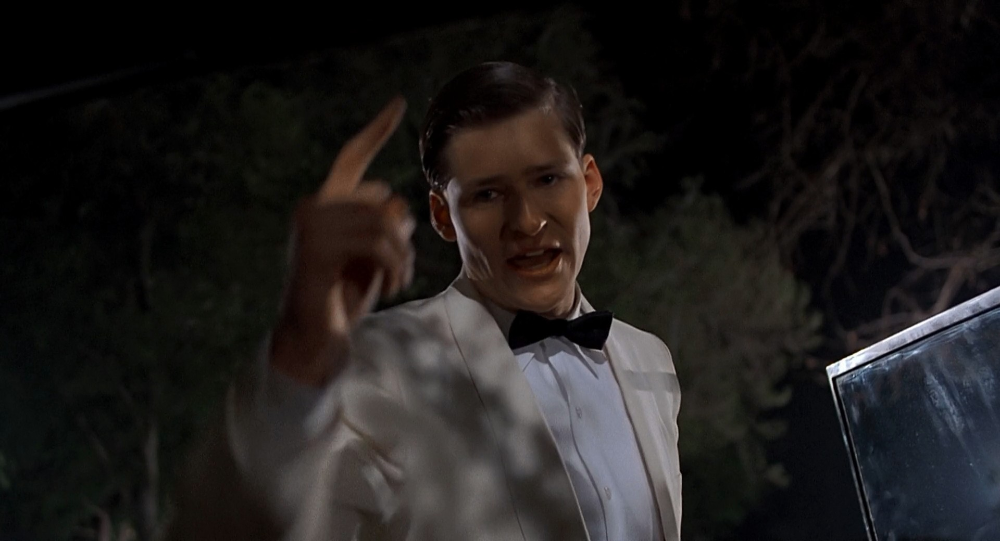
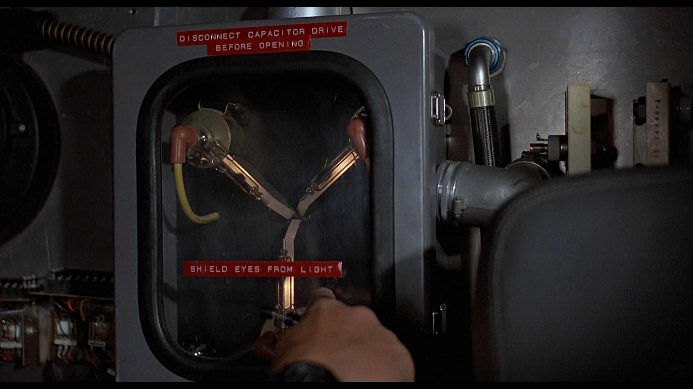
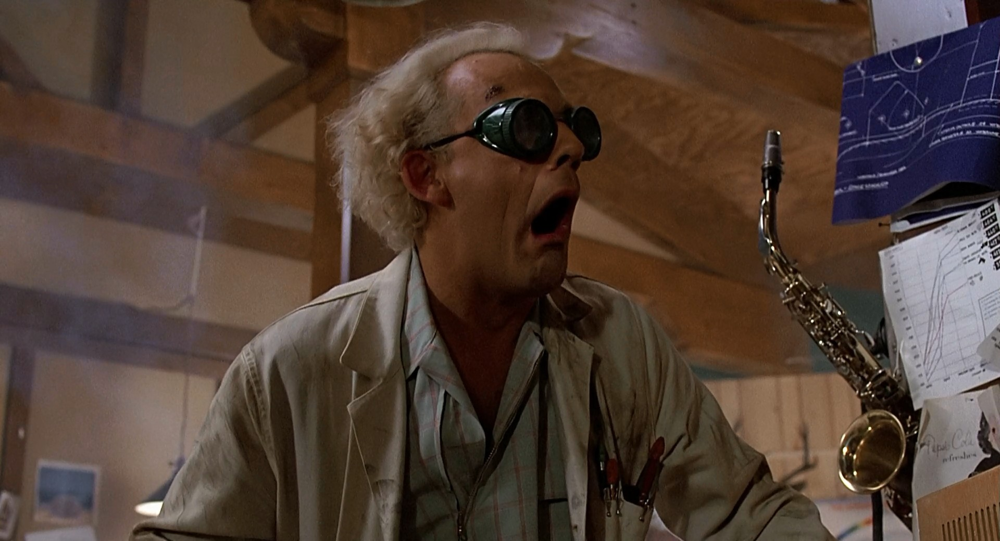
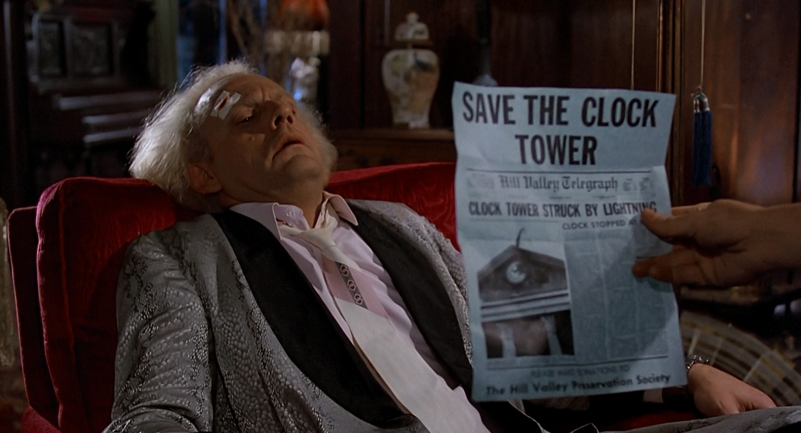
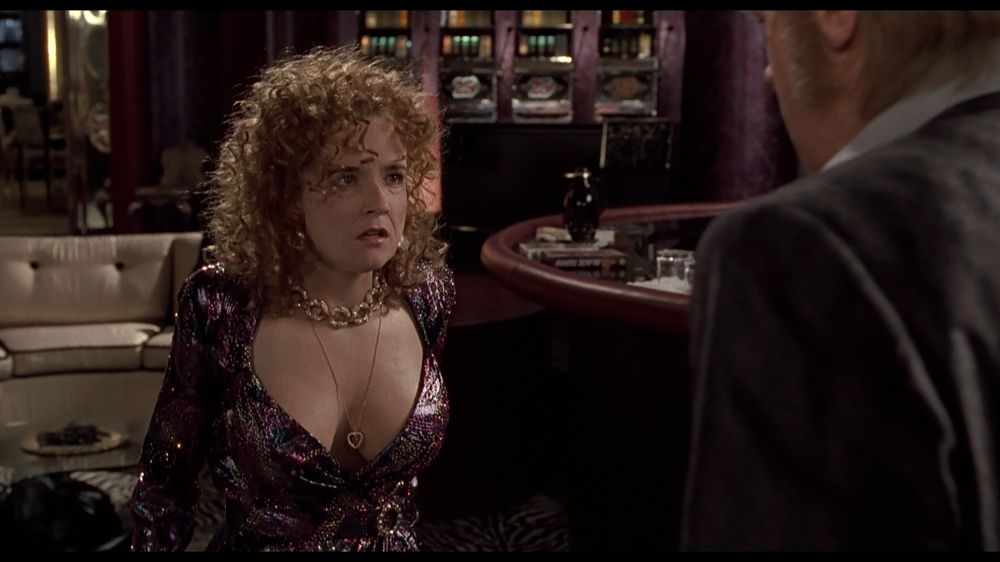
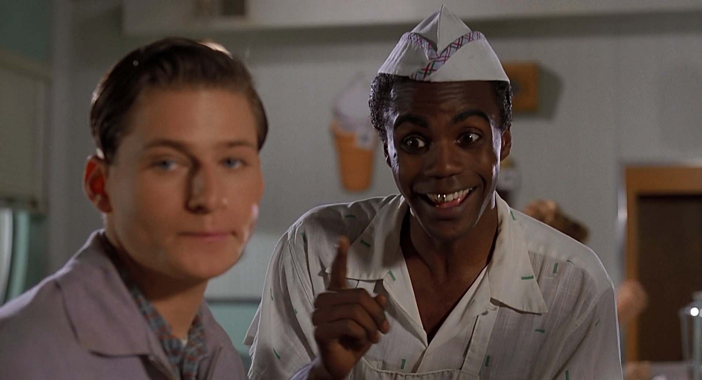
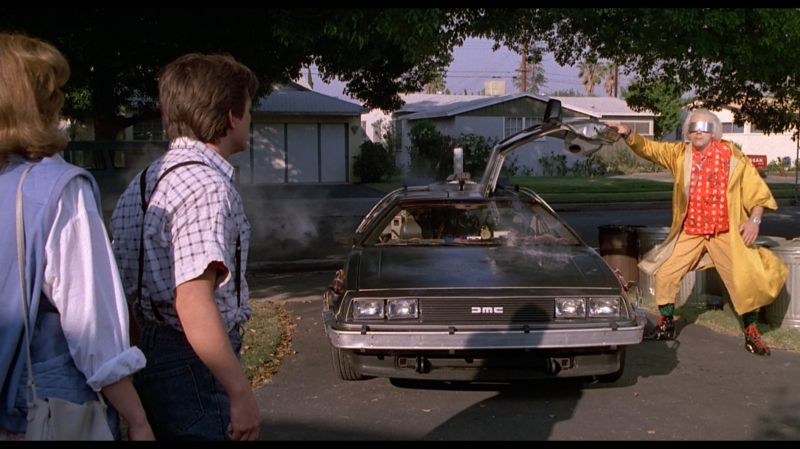

Yours Truly, Famous Inc.
Web Standards Days, Минск, 2015, Павел Ловцевич
Писать CSS легко. Масштабировать CSS и сохранять его поддерживаемым — нет.


Глобальные переменные и имена функций — невероятно плохая идея. Причина в том, что каждый файл JavaScript, подключенный к странице, работает в той же области видимости. Если в вашем коде есть глобальные переменные или функции, то сценарии, включенные после него, которые содержат такие же имена переменных и функций, перезапишут значения ваших.

Механизм языка программирования, позволяющий ограничить доступ одних компонентов программы к другим.

Способ ограничения области видимости правил CSS рамками границ указанного селектора (scoping root).
@scope <selector> {<stylesheet>}
Способ ограничения области видимости правил CSS рамками границ указанного селектора (scoping root).
@scope <selector> {<stylesheet>}
Способ ограничения области видимости правил CSS рамками границ указанного селектора (scoping root).
@scope <selector> {<stylesheet>}
Способ ограничения области видимости правил CSS рамками границ указанного селектора (scoping root).
@scope <selector> {<stylesheet>}
Подробнее в черновике спецификации CSS Scoping Module Level 1.

На протяжении всей жизни во мне работали поэт в инженере, инженер в поэте, и оба в архитекторе.
Соглашение о функциональном назначении селекторов, их структуре и способе именования.
Обзорная статья «Способы организации CSS-кода».
Передача управления стилями на сторону алгоритмических языков.

Команда разработчиков CSS Modules считает, что может решительно преодолеть эту проблему - оставить все что мы любим в CSS, опираясь на те решения, которые создало "Style-in-JS"-сообщество. Хотя мы свято верим в свой подход и убеждены в достоинствах CSS, мы в большом долгу перед теми людьми, которые открывают новые горизонты в другом направлении. Спасибо, друзья!
Нацелены на две основные задачи:

/* components/submit-button.css */.Button { /* все стили по умолчанию */ }.Button_disabled { /* переопределение для disabled */ }.Button_error { /* переопределение для error */ }.Button_in-progress { /* переопределение для in progress */ }
<button class="Button Button--in-progress">In progress...</button>
/* components/submit-button.css */.Button { /* все стили по умолчанию */ }.Button_disabled { /* переопределение для disabled */ }.Button_error { /* переопределение для error */ }.Button_in-progress { /* переопределение для in progress */ }
<button class="Button Button--in-progress">In progress...</button>
/* components/submit-button.css */.Button { /* все стили по умолчанию */ }.Button_disabled { /* переопределение для disabled */ }.Button_error { /* переопределение для error */ }.Button_in-progress { /* переопределение для in progress */ }
<button class="Button Button--in-progress">In progress...</button>
/* components/submit-button.css */.Button { /* все стили по умолчанию */ }.Button_disabled { /* переопределение для disabled */ }.Button_error { /* переопределение для error */ }.Button_in-progress { /* переопределение для in progress */ }
<button class="Button Button--in-progress">In progress...</button>
/* components/submit-button.css */.normal { /* все стили по умолчанию */ }.disabled { /* все стили для disabled */ }.error { /* все стили для error */ }.inProgress { /* все стили для in progress */ }
Подключение через import или require на этапе компиляции.
JS и CSS коммуницируют в формате ICSS (Interoperable CSS).
/* components/submit-button.js */import styles from './submit-button.css';buttonElem.outerHTML =`<button class=${styles.normal}>Submit</button>`
<button class="components_submit_button__normal__abc5436">Submit</button>
<button class="components_submit_button__normal__abc5436">Submit</button>
<button class="components_submit_button__normal__abc5436">Submit</button>
<button class="components_submit_button__normal__abc5436">Submit</button>
<button class="components_submit_button__normal__abc5436">Submit</button>
/* Больше не делаем так */`class=${[styles.normal, styles['in-progress']].join(" ")}`/* Используем одиночный класс */`class=${styles.inProgress}`
/* Больше не делаем так */`class=${[styles.normal, styles['in-progress']].join(" ")}`/* Используем одиночный класс */`class=${styles.inProgress}`
/* Больше не делаем так */`class=${[styles.normal, styles['in-progress']].join(" ")}`/* Используем одиночный класс */`class=${styles.inProgress}`
/* BEM Style */innerHTML = `<button class="Button Button--in-progress">`/* CSS Modules */innerHTML = `<button class="${styles.inProgress}">`
/* BEM Style */innerHTML = `<button class="Button Button--in-progress">`/* CSS Modules */innerHTML = `<button class="${styles.inProgress}">`
/* BEM Style */innerHTML = `<button class="Button Button--in-progress">`/* CSS Modules */innerHTML = `<button class="${styles.inProgress}">`
.common {/* все базовые стили */}.normal {composes: common; /* стили для normal */}.error {composes: common; /* стили для error */}
.common {/* font-sizes, padding, border-radius */}.normal {composes: common; /* blue color, light blue background */}.error {composes: common; /* red color, light red background */}
.components_submit_button__common__abc5436 {/* font-sizes, padding, border-radius */}.components_submit_button__normal__def6547 {/* blue color, light blue background */}.components_submit_button__error__1638bcd {/* red color, light red background */}
import styles from './submit-button.css'; вернет:
styles: {common: "components_submit_button__common__abc5436",normal: "components_submit_button__common__abc5436components_submit_button__normal__def6547",error: "components_submit_button__common__abc5436components_submit_button__error__1638bcd"}
import styles from './submit-button.css'; вернет:
styles: {common: "components_submit_button__common__abc5436",normal: "components_submit_button__common__abc5436components_submit_button__normal__def6547",error: "components_submit_button__common__abc5436components_submit_button__error__1638bcd"}
import styles from './submit-button.css'; вернет:
styles: {common: "components_submit_button__common__abc5436",normal: "components_submit_button__common__abc5436components_submit_button__normal__def6547",error: "components_submit_button__common__abc5436components_submit_button__error__1638bcd"}
import styles from './submit-button.css'; вернет:
styles: {common: "components_submit_button__common__abc5436",normal: "components_submit_button__common__abc5436components_submit_button__normal__def6547",error: "components_submit_button__common__abc5436components_submit_button__error__1638bcd"}
<button class="components_submit_button__common__abc5436components_submit_button__normal__def6547">Submit</button>
@import, @mixin, @extend работают в одном глобальном пространстве!
Cерьезный рефакторинг variables.scss и settings.scss неизбежен с ростом кодовой базы!
И все равно на выходе будет монстр на сотни и тысячи строк.
import, requireподтягивание зависимостей в JS →
composes аналогия в CSS Modules.
Исполняются в одном файле в один момент времени →
нет возможности замусорить глобальное пространство.
/* colors.css */.primary {color: #720;}.secondary {color: #777;}/* прочие вспомогательные стили... */
/* submit-button.css */.common { /* font-sizes, padding, border-radius */ }.normal {composes: common;composes: primary from "../shared/colors.css";}
/* colors.css */.shared_colors__primary__fca929 {color: #720;}.shared_colors__secondary__acf292 {color: #777;}
/* submit-button.css */.components_submit_button__common__abc5436 {/* font-sizes, padding, border-radius */}.components_submit_button__normal__def6547 { }
<button class="shared_colors__primary__fca929components_submit_button__common__abc5436components_submit_button__normal__def6547">Submit</button>
<button class="shared_colors__primary__fca929components_submit_button__common__abc5436components_submit_button__normal__def6547">Submit</button>
<button class="shared_colors__primary__fca929components_submit_button__common__abc5436components_submit_button__normal__def6547">Submit</button>
<button class="shared_colors__primary__fca929components_submit_button__common__abc5436components_submit_button__normal__def6547">Submit</button>
Композиция описывает, чем элемент является, а не то, как он оформлен.
Способ связывания структурных сущностей (элементов) и описательных сущностей (стилей).
.some_element {font-size: 1.5rem;color: rgba(0,0,0,0);padding: 0.5rem;box-shadow: 0 0 4px -2px;}
.element {composes: large from "./typography.css";composes: dark-text from "./colors.css";composes: padding-all-medium from "./layout.css";composes: subtle-shadow from "./effect.css";}
/* сокращенное объявление */.element {composes: padding-large margin-small from "./layout.css";}/* полное объявление */.element {composes: padding-large from "./layout.css";composes: margin-small from "./layout.css";}
.article {composes: flex vertical centered from "./layout.css";}.masthead {composes: serif bold 48pt centered from "./typography.css";composes: paragraph-margin-below from "./layout.css";}

Песочница на Plunkr.